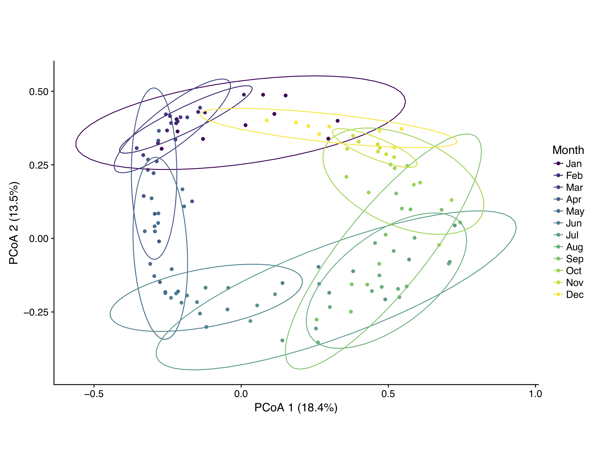

Research
Broadly, my research uses a combination of observational, experimental, and modeling approaches to explore how dispersal and dormancy influence community structure. Code for some of my projects can be found on my GitHub page.
Dormancy in metacommunities

Metacommunity ecology has improved our understanding of how dispersal affects community structure and dynamics across spatial scales, but it has yet to adequately account for dormancy, a reversible state of reduced metabolic activity. Dormancy can influence metacommunities, most notably, by buffering against harsh environmental conditions and by modifying dispersal rates. Seed banks of long-lived dormant propagules can introduce historical controls on community structure that are decoupled from contemporary dispersal rates. With coauthors Mathew Leibold and Jay Lennon, I developed a framework for predicting how dormancy might alter the local, regional, and historical factors that influence community assembly, structure, and dynamics in metacommunities. Our preprint presents a brief review of case studies from a range of ecosystems, results from simple simulation models, and an empirical data analysis from a metacommunity system.
Relevant manuscripts:
- Wisnoski, Nathan I., Mathew A. Leibold, and Jay T. Lennon. (in review). Dormancy in metacommunities. Check out the preprint.
Metacommunity structure in stream networks
Ecological communities do not occur in isolation, but rather, they are connected by the dispersal of potentially interacting species to form a metacommunity. The study of metacommunities in stream networks has demonstrated the usefulness of this perspective and have generated a range of hypotheses about how local and regional-scale processes vary in importance across the stream network. My research investigates the relative importance of local conditions (e.g., hydrological, chemical, or biotic variables), dispersal/connectivity, and dormancy for benthic and planktonic bacterial diversity across a 5th-order stream network at the H. J. Andrews Experimental Forest, a Long-Term Ecological Research (LTER) site in Oregon, USA. This work is conducted in collaboration with Adam Ward.
Relevant manuscripts (in prep):
- Wisnoski, Nathan I. and Jay T. Lennon. Habitat-specific community assembly processes in a dendritic metacommunity.
The importance of dispersal and dormancy for lake bacterioplankton structure, dynamics, and ecosystem function
Bacterial communities in lakes and reservoirs are structured by a combination of local and regional factors. In the lake, species interactions and environmental heterogeneity allow different species to be favored in different microhabitats or at different times of the year if species show differential responses to the environment, potentially allowing species to coexist. Stabilizing coexistence may be likely in microbical communities due to the ability of many taxa to enter dormancy, which can buffer against suboptimal changes in the environment and modify the relative strength of inter and intraspecific competition. We found support for these hypotheses from a high-resolution time series of active and total (active + dormant) bacterial diversity along with a suite of environmental variables.
Because lakes are open systems, however, they also receive inputs of resources, energy, and organisms from surrounding terrestrial landscapes. To determine whether the effects of terrestrial inputs are greater for metabolically active than total bacterial communities, we sampled along a terrestrial–aquatic transect and analyzed patterns of bacterial diversity. We found evidence that soils potentially support strong source-sink dynamics across the terrestrial-aquatic boundary, but that these effects are largely restricted to the total, not the active, lake bacterial community community. Moreover, we found that few of these immigrating taxa become abundant members of the active community. We also found evidence that these terrestrial contributions may alter lake ecosystem functions, suggesting that high dispersal of maladapted individuals could influence biodiversity–ecosystem function (BEF) relationships.
Relevant manuscripts (in prep):
Wisnoski, Nathan I. and Jay T. Lennon. The contribution of “seed banks” to bacterial community dynamics.
Wisnoski, Nathan I. Mario E. Muscarella, Megan L. Larsen, and Jay T. Lennon. Dormancy and dispersal across ecosystem boundaries.

Metacommunities across the LTER Network
Testing metacommunity predictions in natural ecosystems has remained challenging because of the need to conduct large-scale field studies over long temporal scales (though a handful of key long-term field studies have been vital to the development of metacommunity ecology). One source of long-term ecological data is the LTER Network, whose datasets are often approaching 30-40 years in duration. As part of the synthesis mission of the LTER Network Communications Office (NCO) at NCEAS, our working group is analyzing metacommunity stability across the LTER Network.
Relevant manuscripts (in prep):
Voelker et al. Metacommunity ecology as a lens to interpret long-term biodiversity data.
Lamy et al. The dual dimensions of metacommunity stability.
The role of dormancy in host-phage dynamics
Bacteria in nature often encounter non-ideal growing conditions and persist in a dormant state. These dormant bacteria accumulate into a “seed bank” of metabolically inactive individuals that can rejoin the active community when conditions become favorable again. The microbial seed bank may be vital for maintaining high levels of bacterial diversity in a community, but it remains unclear how seed banks influence food web relationships and eco-evolutionary dynamics. With collaborators Daniel Schwartz, Jason Walsman, and Jay Lennon, we are using mathematical models and microcosm experiments to investigate how dormancy influences the ecological and evolutionary dynamics of bacterial hosts and bacteriophages.
Copyright © 2018 Nathan I. Wisnoski. All rights reserved.